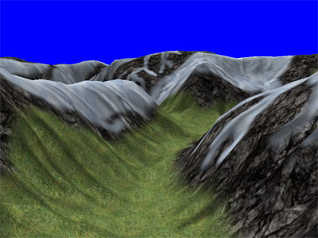

All Scenes can be started using the corresponding .bat files. Information about all scenes can be found at the end of this document.
can be changed by modifying the file 'config.cfg'. You can (de-)activate
Steering is done (if activated) by using mouse and keyboard.
There are three navigation modes (switch by pressing <m>):
All keyboard bindings can be modified in 'config.cfg'.
These are the default settings:
Miscellaneous settings
pressing <f>
switches wireframe on/off
pressing <v> freezes the visibility calculation (no more vis-updates)
pressing <alt-enter> switches to and from fullscreen
It is possible to record and replay benchmarks:
New benchmarks are written into a file 'bench.new'.
To play a benchmark add the corresponding line into the scene-file.
(have a look into maps/grandcanyon/terrain.cfg).
Any information about a scene is stored in a cfg file.
All settings in the cfg files are documented.
The most interesting settings are:
Resembles a typical game scene (without any objects on the surface).
This scene uses three materials plus a cloud shadow layer.
Additionally skybox and a lensflare is rendered.
The complete scene consists of 131.072 triangles.
Same terrain as gamescene but uses only one material and no skybox or lensflare.
The complete scene consists again of 131.072 triangles.
Part of the Grand Canyon dataset by Hugues Hoppe (thanks).
The complete scene consists of 524.288 triangles.
Demonstrates the usage of PVS.
The complete scene consists again of 131.072 triangles.

© 2003 by Daniel Wagner